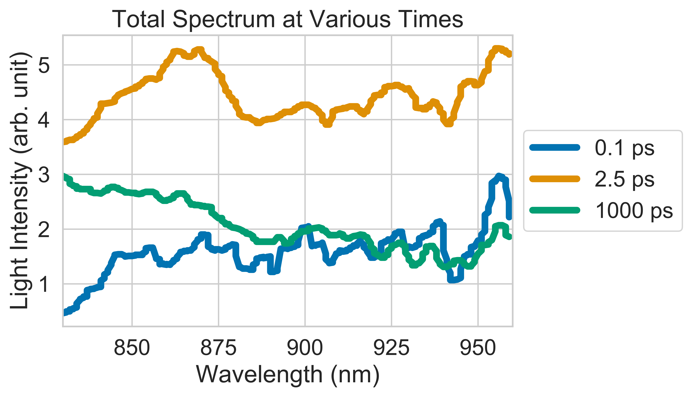
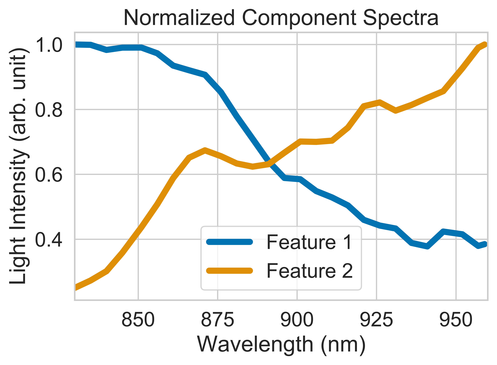
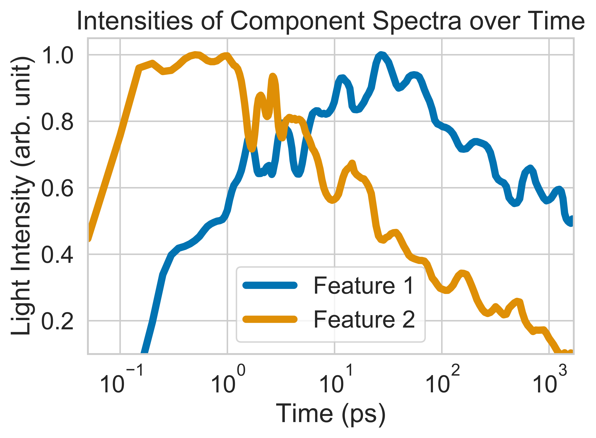

Machine Learning Genetic Algorithm for
Spectral Decomposition
Documentation written by Vincent Kim, Optoelectronics Group, University of Cambridge
Installation¶
This program runs in Python 3.7. It uses libraries such as numpy, scipy, matplotlib, and seaborn. Data arrays are manipulated and analyzed with numpy and scipy. Visualizations are created with matplotlib and seaborn. To run the algorithm, the user must have the spectralGA.py and parameters.py Python modules in the same directory. To start the GA, the user must then run spectralGA.py, which has the parameters.py module imported. Upon starting, the program will create a subdirectory that is labeled with a timestamp, and results will be saved as text and image files.
Motivation¶
This module provides an environment to analyze time-series spectral data. It allows the user to observe an evolving spectrum over time at various wavelengths and intensities. Furthermore, it uses a genetic algorithm to decompose the evolving spectrum into component spectra that overlap in time and wavelength. The main motivation of this module is to analyze data from spectroscopy experiments. Results from this module inform the fundamental physics of how light interacts with matter, which have continued to directly impact the design of more efficient solar panels and light-emitting diodes (LEDs).
What do genetic algorithms do?¶
Genetic algorithms (GA) are a type of evolutionary algorithm (EA) that are inspired by the concept of natural selection in evolutionary biology. They are used in machine learning for solving optimization problems. When applied to a spectrum whose shape is changing over time, a genetic algorithm can tell us the best way to express that spectrum as a sum of smaller spectra whose intensities grow and decay at different rates. In this sense, the GA analyzes a complex observation into smaller parts that are easier to understand.
When analyzing spectral data, those smaller parts are often called “component spectra” or “spectral features” and they correspond to certain physical processes. In optoelectronic experiments, they can tell us when and to what extent molecules absorb light, produce electric charges, and emit light. Knowing how these processes are related allows us to design more efficient solar panels and LEDs.
Decomposing a spectrum¶
This program should be fed 3-dimensional spectral data whose x, y, and z dimensions are wavelength, time, and intensity, respectively. This data should be contained in a tab-delimited text file whose first column contains x values, first row contains y values and whose matrix values contain z values.
The following is an example of a surface plot of a spectrum:

We can take slices of this plot at certain times:

We can see the shape of the spectrum changing in both the surface plot and the plot of time slices. This can be explained by component spectra that change at different rates. For example, the GA would decompose the complete spectrum into two spectra as show below:

These spectra are normalized so that we can compare their shapes. We can graph their actual intensities over time by plotting their kinetics:

We see that as the intensity of one feature decays, the intensity of the other feature grows. If the rates of growth and decay are similar, that might mean that the presence of one feature might lead to the presence of another feature in our model. For instance, the first feature might be due to a material having absorbed light. The second feature might be caused by electric charges building up in the material. In this sense, we can see to what extent and how quickly light is converted into electricity.
How the GA optimization works¶
The genetic algorithm optimizes a solution through a process analogous to natural selection. Populations are created, the fittest are selected to reproduce, mutations arise in the gene pool, and populations evolve over time. Eventually the process is stops after a certain number of generations or when the fitness reaches a certain value. The best individual is then chosen, which compares to the model that best explains the observed data. This best model can then be used to inform other related models or design processes.
In this program, each member of the population is a model comprised of a set of normalized spectra that are guesses for the component spectra. The algorithm clones the first member, but randomly mutates the shapes of the spectra in each individual. The GA then compares how each of these similar, guessed models compares to the observed data. The guesses that are most correct are chosen to be replaced with similar guesses in the next iteration. These new models are made by randomly interchanging parts of the shapes of the best old models. The new models are then slightly randomized before repeating the process again. Tying it back to the analogy, the old models are the parents, the new models are the children, the interchange is called “crossover” and represents how children are a mix of their parents genes.
Spectroscopy¶
While this genetic algorithm module can be used for different types of spectral data or any data of a similar shape, it was designed with transient absorption spectroscopy (TAS or TA) in mind. This is a technique used to capture processes that occur on time scales of a billionths of a second or faster. These experiments are common in the field of optoelectronics. Therefore, names of methods and variables in this module largely correspond to terms from those experiments. Furthermore, explanations made up until this point have been simplified. For instance, instead of the intensity values for the z dimension, TA values are unitless DT/T values that are specific to the TA experiments. Explanations of TA are readily found elsewhere should someone want a more precise discussion.
Classes and Methods¶
TAData¶
Allows the user to interact with spectral data. In practice, these are normally results from transient absorption spectroscopy (TAS or TA), which is a technique employed extensively in the field of optoelectronics (how electronic devices interact with light).
GeneticAlgorithm¶
Represents a genetic algorithm for optimizing the reconstruction of observed spectral (TA) data.
load_initial_guesses_and_reference_spectra¶
Loads the initial guesses and reference spectra from text files. These spectra are provided by the user based on theory or previous experiments. Initial guesses are modified during optimization whereas references are not modified.
uncertainty¶
Uses the standard deviation around each point to estimate the uncertainty of that point locally.
smooth¶
Reduces noise in the TA data before running the genetic algorithm. Smoothing is currently done in other programs, but this could be expanded to integrate with other spectral analysis modules.
cut_off¶
Sets the region of interest of the TA data for running the genetic algorithm.
run_GA¶
Constructs and runs the genetic algorithm on the TA data.
GA_optimization¶
Generates initial populations, noise, Gaussian functions, and new populations over many generations.
evolution¶
Holds a tournament for the best gene selections.
fitness¶
Calculates how the reconstructed spectra compare to the observed spectra.
ss_spline¶
Creates an interpolation function that is used when switching between the entire axis and the subsampled axis.
QR_solve¶
A Python implementation of MATLAB’s right matrix division (“/”). QR_solve(A, B) performs the equivalent of MATLAB’s A / B that solves for x in the equation Ax = B. In Python, instead of performing A / B, it computes (B’ \ A’)’ using QR factorization.
save_results¶
Saves the results of the genetic algorithm in text files.
save_metadata¶
Saves parameters for an execution of the genetic algorithm.
timeslices¶
Plots time slices of the complete observed spectrum.
surface_plots¶
Plots surface maps of the total and component spectra.
Credits and Acknowledgements¶
This module is based on an excellent genetic algorithm program written in MATLAB by Simon Gelinas Simon Gélinas during his PhD in the Optoelectronics Group at the University of Cambridge. The program is discussed in his thesis, and it is a wonderful resource to the group. Many thanks to Florian Schroeder and Callum Ward for their valuable contributions to said MATLAB program.